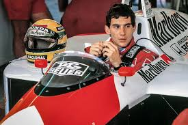

Ayrton Senna foi um piloto de Fórmula 1 das décadas de 1980 e 1990, e é considerado o maior idolo brasileiro do automobilismo. Nasceu em São Paulo, no dia 21 de março de 1960, e morreu de um jeito trágico em 1° de maio de 1994, após colidir com uma mureta de proteção no Grande Prêmio de San Marino, em Ímola.
Ayrton Senna começou no kart aos 13 anos, vencendo sua primeira corrida no Kartódromo de Interlagos, em São Paulo. Rapidamente se destacou no cenário nacional, conquistando títulos como o Campeonato Paulista, o Sul-Brasileiro e o Campeonato Brasileiro de Kart, entre 1977 e 1980. Também foi vice-campeão mundial de kart duas vezes, o que o marcou profundamente. Em 1981, Senna mudou-se para a Inglaterra para competir em categorias de base. Venceu o campeonato da Fórmula Ford 1600 logo em seu primeiro ano e,em 1982, foi campeão da Fórmula Ford 2000. Seu talento chamou atenção definitiva em 1983, quando venceu o campeonato da Fórmula 3 Britânica com 12 vitórias, abrindo caminho para sua entrada na Fórmula 1 em 1984, pela equipe Toleman.
Estreia: 1984 – Toleman Senna estreou na equipe Toleman. Apesar das limitações técnicas do carro, surpreendeu com sua performance, especialmente no GP de Mônaco, onde terminou em 2º lugar em uma corrida sob chuva torrencial. Lotus (1985–1987) Conquistou suas primeiras vitórias na F1 GP de Portugal 1985 (sua 1ª vitória na carreira, em pista molhada) 6 vitórias no total durante sua passagem pela Lotus. Ficou famoso por sua velocidade em classificações, conquistando várias pole positions.
Além disso, nesse período Senna se estabeleceu como um dos maiores pilotos da história, dominando em circuitos de rua e se destacando em condições de pista molhada. Sua habilidade em conquistar pole positions também ficou marcada, com recordes de poles em vários anos.
Williams (1994) Em 1994, Senna se transferiu para a equipe Williams. As expectativas eram muito altas, mas infelizmente a temporada foi marcada por tragédia. No GP de San Marino, em Ímola, durante a terceira corrida da temporada, Ayrton Senna sofreu um grave acidente na curva Tamburello e faleceu. Seu legado e sua influência no automobilismo mundial permanecem até hoje.